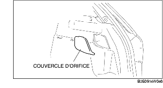
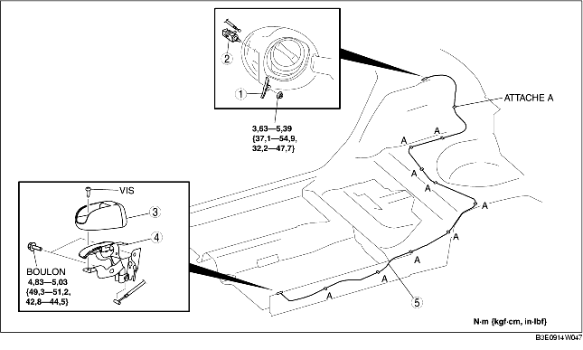

DEPOSE/REPOSE DE DISPOSITIF D'OUVERTURE DE TRAPPE DE REMPLISSAGE DE CARBURANT [conduite à gauche]
B3E091466640W01
1. Pour la dépose de dispositif d'ouverture de trappe de remplissage de carburant, effectuer la procédure suivante :
-
• 5HB
-
- Déposer le cache d'orifice situé sur la garniture latérale de coffre. (droite)

-
• 4SD
-
- Déposer la garniture d'éxtrémité de coffre (voir la section DÉPOSE/REPOSE DE GARNITURE D'EXTREMITÉ DE COFFRE.)
-
- Plier légèrement vers l'arrière la garniture latérale de coffre. (droite) (voir la section DEPOSE/REPOSE DE GARNITURE LATERALE DE COFFRE.)
2. Pour déposer le levier d'ouverture de trappe de remplissage de carburant, effectuer la procédure suivante :
-
(1) Bas de portière avant (côté conducteur) (voir la section DÉPOSE/REPOSE DE BAS DE PORTIÈRE AVANT.)
3. Lors de la dépose du câble de dispositif d'ouverture de trappe de remplissage de carburant, effectuer la procédure suivante :
4. Déposer les pièces suivantes :
-
(1) Bas de portière arrière (côté conducteur) (voir la section DÉPOSE/REPOSE DU BAS DE PORTIÈRE ARRIÈRE.)
-
(2) Siège arrière (voir la section DÉPOSE/REPOSE DE SIÈGE ARRIÈRE.)
-
(3) Garniture de passage de roue (côté conducteur) (voir la section DÉPOSE/REPOSE DE GARNITURE DE PASSAGE DE ROUE.)
-
(4) Garniture inférieure de montant B (côté conducteur) (voir la section DÉPOSE/REPOSE DE GARNITURE INFÉRIEURE DE MONTANT B.)
-
(5) Siège avant (côté conducteur) (voir la section DEPOSE/REPOSE DE SIEGE AVANT.)
5. décoller partiellment le revêtement de plancher de sorte que le câble du dispositif d'ouverture de la trappe de remplissage de carburant puisse être déposé.
6. Déposer le câble des dispositif d'ouverture de trappe de remplissage de carburant des attaches A.
7. Déposer les différents éléments selon l'ordre indiqué dans le tableau.
8. Pour la repose, suivre l'ordre inverse de la dépose.

.
|
1
|
Ressort de levée
|
|
2
|
Dispositif d'ouverture de trappe de remplissage de carburant
|
|
3
|
Cache de levier d'ouverture de trappe de remplissage de carburant
|
|
4
|
Levier d'ouverture de trappe de remplissage de carburant
|
|
5
|
Câble de dispositif d'ouverture de trappe de remplissage de carburant
|